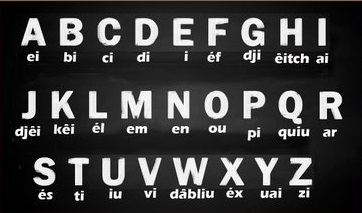

1st stage
Lesson 1
Grammatical Notions
Subjective Pronous: I, You, He, She, It, We, You, They
Objective Pronous: Me, You, Him, Her, It, Us, Your, Them
Auxiliary verb: To be
Examples:
Affirmative sentences: I am fine. | I am Brazilian.
Interrogative sentences: Are you fine? | Are you Brazilian?
Negative sentences: He is not fine | He is not Brazilian
Vocabulary
|
Mister (Mr.) |
Missis (Mrs.) |
Miss(Ms.) |
So Long |
Some greetings: good morning, good afternoon, good evening, good night.
Main Verbs
|
See |
Hear |
Eat |
Drink |
Sentences:
|
I see you |
You hear me |
I hear the music |
English Alphabet

VERB TO BE
|
Affirmative forms I am = I'm |
Interrogative forms Am I? |
Negative forms I am not = I'm not |
Conjugations of the verb: TO SPEAK
|
Affirmative forms I speak |
Interrogative forms Do I speak? |
Negative forms I don't speak |
Short affimative answers: Yes, I do. | Yes, he/she does. | Yes, they do.
Short negative answers: Yes, I don't. | Yes, he/she doesn't. | Yes, they don't.
Some examples:
Do you speak English? Yes, I do (or: No, I don't).
Are you fine? Yes, I am (or: No I am not)